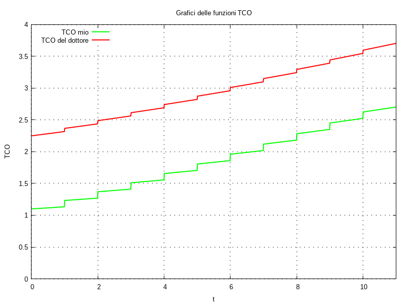

Posted on Sep 10, 2026
Parte sette; della parte sei; della parte cinque; della parte quattro; della parte tre; della parte due; della parte uno.
Ormai m’è rimasto quasi nulla da dire.
Contrariamente a quanto avevo scritto: non è necessario abbattere i sedili posteriori per trasportare la sedia a rotelle che usiamo; togliendo i poggiapiedi rimovibili (non occorrono utensili) la si può riporre sdraiata nel bagagliaio; dal punto di vista della logistica dei trasporti: fa differenza. Non c’ho pensato prima perché sono scemo. +1 per l’auto.
Ho visto il video del dottor Coletti riguardo le sue prime esperienze con un’automobile elettrica; confesso che non l’ho guardato tutto, ogni tanto ho saltato in avanti; comunque m’ha stimolato a fare qualche considerazione comparativa sul Total Cost of Ownership, tco, tra la mia auto e quella del dottore, nel caso in cui l’acquistato sia avvenuto pagando tutto subito, senza finanziamento. Per quanto poco utili: queste considerazioni renderanno questo post davvero lungo da leggere.
Occorre ricordare che il tco non è l’unica figura di merito per confrontare due automobili: si deve anche tener conto del valore multidimensionale estratto dal possesso dell’oggetto; valore che per certe dimensioni è finanziario, mentre per altre dimensioni è spesso immateriale e di difficile quantificazione. Per esempio un’automobile può essere piú spaziosa, comoda e divertente da guidare d’un’altra. In un certo senso il valore estratto rappresenta il Return On Investment, roi.
Inoltre non terrò conto del valore residuo dell’automobile, cioè a quanto potrei rivendere l’automobile usata dopo uno, due, tre anni eccetera; nel bilancio patrimoniale personale il possesso dell’automobile è un attivo immobilizzato materiale. Il valore residuo è importante e variabile perché, non potendo che essere un Fair Market Value, dipende da condizioni imprevedibili.
Il modo in cui intendo scrivere del tco è derivato da considerazioni matematiche che avrei voluto illustrare, con un po’ di precisione e formalismo, ma con lo scarso rigore di chi non è un matematico, in un documento LaTeX→pdf che ho iniziato a scrivere in quest’ultimi anni; non l’ho ancora finalizzato sia per mancanza di risorse mentali, che per insufficienza delle mie capacità di comprendere e spiegare alcune idee come vorrei. Ma esiste un futuro possibile in cui…
Qui non posso spiegare tutto e le idee richiedono un certo livello di competenza matematica; mi dispiace per chi non riuscirà a capire.
Iniziamo con questa sequenza di considerazioni.
Osservazione Si potrebbe argomentare che: la maggior parte delle quantità di denaro necessarie a mantenere il possesso d’un’automobile è d’entità modesta; per esempio: con 30,00 eur io faccio il pieno di gpl, dal limite di svuotamento della bombola al massimo ch’essa può contenere; farà davvero differenza se 30,00 eur li spenderò oggi o fra tre mesi? Concettualmente, stabiliamo che faccia differenza perché siamo “pignolazzi”; in realtà, nel seguito, faremo solo calcoli con stime e approssimazioni grossolane; cioè faremo ragionamenti quantitativi per ottenere indicazioni qualitative.
Faremo finta che il pagamento per l’acquisto sia avvenuto nello stesso istante di tempo, pari convenzionalmente a 0.
Indicheremo la mia funzione del tempo tco con f(t) e quella del dottore con g(t); le funzioni f(t) e g(t) valutate all’istante t = 0, cioè f(0) e g(0), rappresentano il pagamento d’acquisto delle automobili.
In modo piú esplicito, esprimendo il valori di pagamento in “per unità” rispetto al prezzo d’acquisto della mia automobile:
Secondo il criterio “spendere meno è meglio”: io parto con un significativo vantaggio.
Come idea fondamentale per la quantificazione del tco useremo questa:
ogni Euro speso per l’automobile non è risparmiato
ci possiamo immaginare due scenari, due futuri alternativi nel multiverso: in uno io spendo 30,00 eur per fare il pieno di carburante; nell’altro io deposito 30,00 eur su un conto bancario per il risparmio. Fissiamo l’idea che: a ogni pagamento nel futuro in cui s’acquista l’automobile, facciamo corrispondere un deposito sul conto di risparmio nell’altro futuro.
Per fare un po’ di sceneggiata costruiamo un grafo di flusso. Supponiamo che io e il dottore manteniamo una scorta di denaro, virtualmente illimitata, sotto il materasso; ogni volta che spendiamo soldi per l’automobile: li preleviamo da qualsiasi cosa ci sia sotto il materasso. Con il gergo della teoria dei grafi: il nodo ‘materasso’ è una sorgente; il nodo ‘automobile’ è un pozzo; il nodo ‘risparmio’ è un pozzo.
Raffiguriamo i due possibili percorsi del denaro, nei futuri alternativi del multiverso, con il semplice grafo:
automobile <-------- materasso --------> risparmio
Adesso c’è la parte matematicamente piú ostica. Immaginiamo che il conto di risparmio, inizialmente “vuoto”, remuneri la giacenza secondo una funzione esponenziale a gradino che moltiplica la quantità di denaro versata (un saluto a tutti quelli che smetteranno di leggere adesso). Se u(t) è il gradino di Heaviside, esp(λ t) è la funzione esponenziale, f(0) è una quantità di denaro depositata all’istante t = 0, allora il controvalore del conto C(t) al generico istante t ≥ 0 risulta:
C(t) = f(0) u(t) esp(λ t)
definiamo il conto di risparmio come sistema lineare tempo–invariante che risponde con un esponenziale a ogni impulso in ingresso; ogni deposito è un impulso.
Adottiamo la posizione secondo cui t = 1 rappresenta l’istante di tempo dopo un anno di 365 giorni, sul calendario gregoriano, dal pagamento d’acquisto; se f(0) = 1 e:
λ = log1p(0,03) = 0,02955880224154443
risulta:
C(1) = f(0) u(1) esp(λ × 1) = 1,03
cioè dopo un anno il conto remunera al 3% il capitale versato.
Osservazione Non posso fare a meno di notare che: per ottenere la remunerazione del 3% occorre fissare λ = 0,02955880224154443 cioè circa 3÷100; è una cosa che succede quando λ è significativamente minore di uno; perché sí… e basta.
Osservazione L’incremento esponenziale è famoso/famigerato perché il valore raddoppia a passi regolari. Posta la remunerazione annuale al 3%: qual è il valore del tempo T per cui esp(λ T) = 2? Risulta:
T = ln(2) ÷ λ = 23,449772250437736
cioè quasi 23 anni e mezzo; risulta anche:
esp(2 λ T) = 4 esp(3 λ T) = 8 esp(4 λ T) = 16eccetera.
Come esperimento concettuale per capire: s’immagini che, nel futuro del multiverso in cui s’acquista l’automobile, il pagamento per l’acquisto sia l’unico movimento di denaro; allora, nel futuro del multiverso in cui si risparmia, esiste un solo deposito sul conto. Attenzione adesso alla ricapitolazione:
i soldi che ho speso sono soldi che non ho risparmiato; pagare f(0) = 1 per l’automobile mi costa 1 al tempo t = 0 e mi sarà costato 1,03 al tempo t = 1. Il controvalore del conto nel futuro in cui ho risparmiato rappresenta i soldi che non avrò nel futuro in cui ho acquistato l’automobile, cioè quanto mi sarà costato acquistare l’automobile invece di risparmiare i soldi.
Osservazione È chiaro che se acquisto l’automobile, poi la posseggo: avrò l’automobile invece dei soldi. È per questo che il roi e il valore residuo dell’auto sono importanti.
Ogni pagamento è un evento istantaneo; a ogni pagamento associamo un costo come funzione del tempo; nello scenario in cui esiste un singolo pagamento: il costo di quel pagamento è uguale al tco.
Quanto sarà costato al dottore, dopo un anno, il pagamento d’acquisto dell’automobile a g(0) = 2,2? Il risultato è:
g(1) = g(0) u(1) esp(λ × 1) = 2,2 × 1 × 1,03 = 2,266
Osservazione Calcoliamo le differenze tra il mio tco e quello del dottore, all’inizio e dopo un anno:
g(0) - f(0) = 2,2 - 1 = 1,2 g(1) - f(1) = g(0) esp(λ × 1) - f(0) esp(λ × 1) = [g(0) - f(0)] esp(λ × 1) = 2,266 - 1,03 = 1,236per λ > 0 la differenza aumenta al passare del tempo:
g(0) - f(0) < g(1) - f(1)dall’ispezione dell’espressioni matematiche s’evince che tale circostanza non dipende dallo specifico valore di λ.
Abbiamo eseguito questi calcoli definendo un conto di risparmio con remunerazione del 3%; è un valore che abbiamo scelto arbitrariamente; potremmo scegliere 2% oppure 4%. Abbiamo anche supposto che il mio λ sia uguale a quello del dottore. Per brevità non ne discuteremo qui e, quando occorrerà, assumeremo il 3% per tutti.
Torniamo a una situazione realistica: nel tempo ci sono molti pagamenti da sostenere durante il possesso del mezzo: energia/carburante, assicurazione, manutenzione, personalizzazione, eccetera. Abbiamo stabilito che il costo associato al pagamento iniziale per l’acquisto si rappresenta con:
C(t) = f(0) u(t) esp(λ t)
come si rappresenta il costo d’un pagamento al tempo ta > 0? Indichiamo l’entità del pagamento con fa, ricordando che dev’essere espressa in per unità rispetto al pagamento d’acquisto dell’auto F, cioè se sono 30,00 eur si deve porre fa = 30 ÷ F; il costo del pagamento risulta:
fa u(t - ta) esp[λ (t - ta)] = fa u(t - ta) esp(λ t) esp(- λ ta)
se esistessero solo il pagamento iniziale e questo pagamento fa il costo totale sarebbe la somma dei costi singoli:
f(t) = esp(λ t) [ f(0) u(t) + fa u(t - ta) esp(- λ ta) ]
Generalizzando:
f(t) = esp(λ t) [ Σk fk u(t - tk) esp(- λ tk) ]
g(t) = esp(λ t) [ Σh gh u(t - th) esp(- λ th) ]
Possiamo caratterizzare ogni mio singolo pagamento con la coppia (tk; fk) e organizzare tutti i miei pagamenti con la tupla:
{ (t0; f0), ..., (tk; fk), ... }
analogamente per i pagamenti del dottore:
{ (t0; g0), ..., (th; gh), ... }
Non sono in grado di stimare in modo credibile i miei pagamenti e quelli del dottore; però possiamo fare un calcolo d’esempio per vedere come va. Immaginiamo:
La tupla dei miei pagamenti risulta:
{ (0; 1),
(0; 0,1), (1; 0,1), (2; 0,1), (3; 0,1), (4; 0,1),
(5; 0,1), (6; 0,1), (7; 0,1), (8; 0,1), (9; 0,1),
(10; 0,1) }
la tupla dei pagamenti del dottore risulta:
{ (0; 2,2),
(0; 0,05), (1; 0,05), (2; 0,05), (3; 0,05), (4; 0,05),
(5; 0,05), (6; 0,05), (7; 0,05), (8; 0,05), (9; 0,05),
(10; 0,05) }

S’intuisce dai grafici che, siccome i miei pagamenti dopo l’acquisto sono d’entità maggiore: a un certo punto, in futuro, il mio tco raggiungerà quello del dottore. Ma quando?
Invece di cercare l’istante del sorpasso, cerchiamo l’inizio d’anno piú vicino nel tempo in cui il sorpasso sia già avvenuto. Consideriamo uno scenario in cui: ogni anno venga eseguito uno dei pagamenti d’inizio anno, all’infinito. Scriviamo la mia funzione tco: escludendo dalla sommatoria il pagamento d’acquisto; ricordando che in questo scenario tk = k; intendiamo che la sommatoria parta dall’indice k = 0:
f(t) = esp(λ t) [ f(0) + Σk fk u(t - k) esp(- λ k) ]
valutiamola in un istante t = K, essendo K un numero naturale; a quell’istante saranno stati eseguiti 1 + K pagamenti dopo l’acquisto; a quell’istante le funzioni gradino di Heaviside per l’indice k tra 0 e K saranno tutte pari all’unità; estendiamo la sommatoria solo tra 0 e K; allora:
f(K) = esp(λ K) [ f(0) + Σk fk esp(- λ k) ]
facendo lo stesso ragionamento per la funzione tco del dottore:
g(K) = esp(λ K) [ g(0) + Σk gk esp(- λ k) ]
vogliamo sapere qual è il valore minimo di K per cui risulta g(K) ≤ f(K); cioè f(K) - g(K) ≥ 0. Analizziamo questa differenza:
f(K) - g(K) = esp(λ K) [ f(0) - g(0) + Σk (fk - gk) esp(- λ k) ]
ogni pagamento dopo l’acquisto è di pari entità, quindi si può scrivere, sostituendo i numeri ai simboli d’entità di pagamento:
f(K) - g(K) = esp(λ K) [ 1 - 2,2 + 0,05 Σk esp(- λ k) ]
l’espressione f(K) - g(K) è non–negativa quando l’espressione tra parentesi quadre è non–negativa:
- 1,2 + 0,05 Σk esp(- λ k) ≥ 0
cioè:
Σk esp(- λ k) ≥ 1,2 ÷ 0,05 = 24
definiamo la costante q:
q = esp(- λ) = esp[ - log1p(0,03) ] = 1 ÷ 1,03
risulta:
Σk qk ≥ 24
la sommatoria per k tra 0 e K di qk è una progressione geometrica, di cui conosciamo la somma:
(1 - qK+1) ÷ (1 - q) ≥ 24
un’elaborazione dopo l’altra risulta:
(1 - qK+1) ÷ (1 - q) ≥ 24
→ (1 - qK+1) ≥ 24 (1 - q)
→ - qK+1 ≥ 24 (1 - q) - 1
→ qK+1 ≤ 24 (q - 1) + 1
→ qK ≤ [ 24 (q - 1) + 1 ] ÷ q
ora prendiamo il logaritmo in base q d’entrambi i membri, siccome la base q è minore di uno dobbiamo passare da ≤ a ≥ e risulta:
K ≥ logq {[(24 (q - 1) + 1] ÷ q} = 39,622139352347176
il minimo valore di K che soddisfa la disequazione è K = 40; avendo indicizzato gli anni a partire da zero: all’inizio del quarantunesimo anno il mio tco sarà piú alto di quello del dottore.